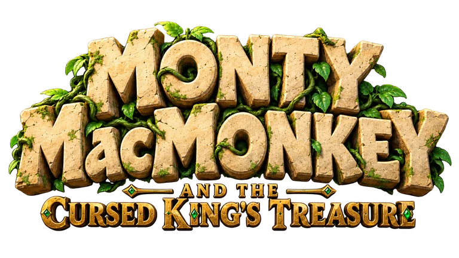
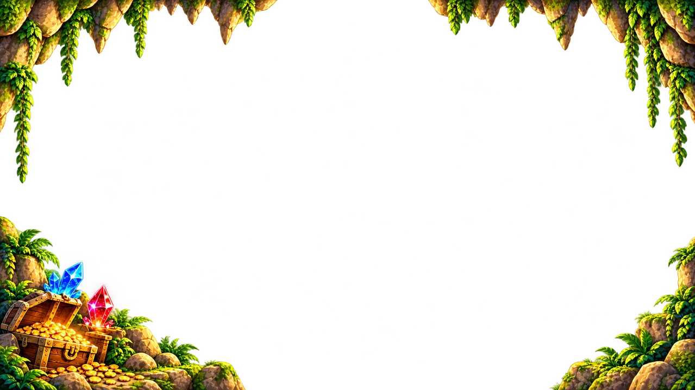
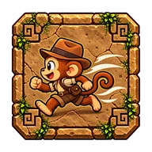
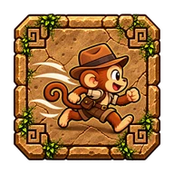
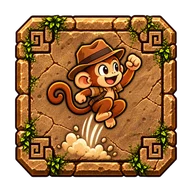
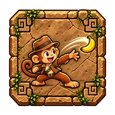
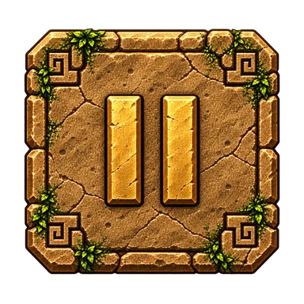

Abenteuer wird geladen …
Montys Abenteuer spielst du im Querformat.
E-Mail: sschmitt1977@googlemail.com
← → Laufen · ↑ Springen · Space Banane werfen.
Esc oder der Pause-Button oben rechts öffnet das Pausenmenü.
Im Hauptmenü kannst du zu den Plattformen laufen und springen. Mit Space aktivierst du die Plattform vor Ort. Alle Plattformen lassen sich auch anklicken oder antippen.
Auf Touchgeräten: links unten laufen, rechts unten springen und werfen. Mehrere Buttons können gleichzeitig gehalten werden. Gleite innerhalb einer Gruppe von Links zu Rechts oder von Sprung zu Wurf, ohne den Finger abzusetzen. Zwischen den Buttons wird die jeweilige Aktion kurz freigegeben.
In den Menüs funktionieren auch Tastatur, Tab und Enter. Die Sprache wechselst du unter Optionen. Beenden führt zurück zur Intro-Auswahl.
Unter Optionen und im Pausenmenü kannst du Musik und Geräusche (SFX) unabhängig voneinander ein- und ausschalten.
Zu den SFX gehören beispielsweise Schritte, Sprünge, Sammel- und Kampfeffekte. Das Intro spielt unabhängig von diesen Einstellungen immer mit seinem eigenen Ton und startet erst nach deiner Eingabe.
Deine Einstellungen werden gespeichert, sofern der Browser lokale Speicherung erlaubt.
Spiele auf Smartphones und Tablets im Querformat. Drehst du während eines laufenden Spiels ins Hochformat, wird pausiert. Drehe zurück und wähle Fortsetzen.
Auf mobilen Geräten und bei kleinen Fenstern wird Vollbild beim Start angefordert, sofern der Browser es unterstützt. Unter Optionen und im Pausenmenü kannst du Vollbild umschalten: An bedeutet aktiv, Aus bedeutet inaktiv.
Standard begrenzt die Spielfläche auf Full HD und zentriert sie auf großen Bildschirmen. Max Size nutzt die verfügbare Fläche; das Bild kann dabei vergrößert werden. Beide Größen findest du unter Optionen und im Pausenmenü. Je nach Bildschirmformat bleiben freie Ränder, damit nichts abgeschnitten wird.
Falls Browserleisten sichtbar bleiben, helfen die Hinweise für dein Gerät in den folgenden Bereichen.
Wenn Safari kein direktes Spiele-Vollbild anbietet oder die Browserleisten sichtbar bleiben, starte das Spiel über den Home-Bildschirm:
Bezeichnungen und Vollbildmöglichkeiten unterscheiden sich je nach iOS-/iPadOS-Version. Auf unterstützten iPads kann Vollbild auch direkt im Browser funktionieren.
Öffne das Spiel möglichst direkt in einem aktuellen Browser, zum Beispiel Chrome, statt im eingebauten Browser einer anderen App.
Optional kannst du im Browsermenü (⋮) „Zum Startbildschirm hinzufügen“ oder, falls angeboten, „App installieren“ wählen und das neue Symbol nutzen. Eine reine Verknüpfung blendet die Browserleisten nicht automatisch aus.
Menünamen und Unterstützung hängen von Gerät und Browser ab. Das Hinzufügen zum Startbildschirm garantiert keine Offline-Spielbarkeit.
Sammle Schätze und Bananenmunition, überwinde die Gegner und besiege den verfluchten König.
Eidechse und Käfer kannst du von oben treffen. Der gepanzerte Armadillo ist nur mit Bananen besiegbar.
Bei Sieg: Sammelpunkte + verbleibende Leben × 50 + verbleibende Munition × 10. Bei Niederlage zählen die Sammelpunkte.
Die besten 10 abgeschlossenen Läufe bleiben nur in diesem Browser auf diesem Gerät gespeichert. Es gibt keine Online-Rangliste.
Beim Löschen der Browserdaten gehen die Highscores verloren. Im privaten Modus können sie nach dem Schließen verschwinden.
Ist lokale Speicherung gesperrt, gelten Ergebnisse und Einstellungen nur für die laufende Sitzung. Ein anderer Browser oder ein Start als Web-App kann einen eigenen Speicherbereich verwenden.
← → Move · ↑ Jump · Space Throw a banana.
Esc or the top-right pause button opens the pause menu.
Walk and jump between the main-menu platforms. Press Space while standing on one to activate it. You can also click or tap any platform.
On touch devices: move at the bottom left; jump and throw at the bottom right. You can hold multiple buttons at once. Slide within either group between Left and Right or Jump and Throw without lifting your finger. Moving through the gap releases that action until you reach a button.
Menus also support the keyboard, Tab and Enter. Change the language in Options. Exit returns to the intro entry screen.
Switch music and sound effects (SFX) on or off independently in Options or the pause menu.
SFX include footsteps, jumping, collecting and combat effects. The intro always plays with its own audio, independently of these settings, and starts after your interaction.
Your settings are saved if your browser allows local storage.
Play on phones and tablets in landscape orientation. Rotating to portrait during a run pauses your game. Rotate back and choose Resume.
On mobile devices and in small windows, fullscreen is requested when you start, if supported by your browser. Toggle it in Options or the pause menu: On means active; Off means inactive.
Standard limits the play area to Full HD and centers it on large screens. Max Size uses the available space and may enlarge the image. Choose either size in Options or the pause menu. Empty margins may remain so the entire play area stays visible.
If browser bars remain visible, see the device-specific sections below.
If Safari does not offer game fullscreen or its browser bars remain visible, launch the game from your Home Screen:
Labels and fullscreen support vary between iOS/iPadOS versions. Supported iPads may also offer fullscreen directly in the browser.
Open the game directly in an up-to-date browser such as Chrome, rather than another app’s built-in browser.
Optionally, choose “Add to Home screen” or “Install app”, if offered, from the browser menu (⋮), then use the new icon. A plain shortcut does not automatically hide browser bars.
Menu labels and support depend on your device and browser. Adding the game to your Home Screen does not guarantee offline play.
Collect treasures and banana ammunition, overcome enemies and defeat the cursed king.
Stomp the lizard and beetle from above. The armored armadillo can only be defeated with bananas.
Victory: collected points + remaining lives × 50 + remaining ammunition × 10. Defeat counts collected points.
The top 10 completed runs are saved only in this browser on this device. There is no online leaderboard.
Clearing browser data removes your scores. Private browsing may discard them when closed.
If local storage is blocked, results and settings last only for this session. Another browser or a Home Screen web app may use separate storage.